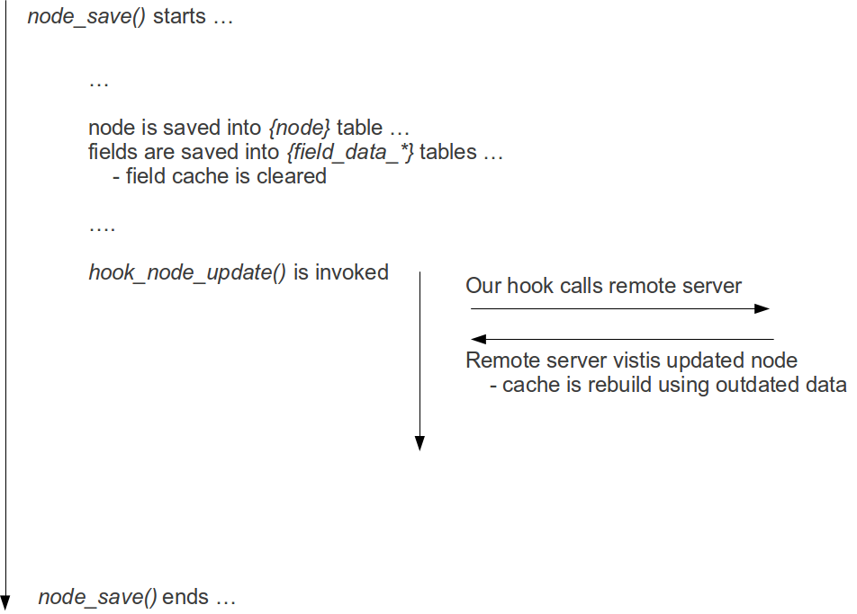
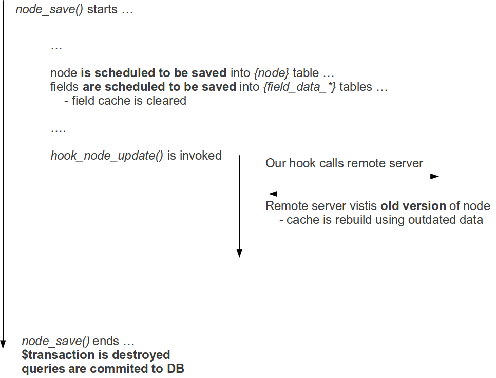

Problem
We have a bigger media website on Drupal 7 with an editorial team of ~20 members. Lately they started to complain about strange behavior when updating content on site. They said, that changes were not saved at all. If they opened a node form immediately after saving it Drupal served old (outdated) content. I first suspected Varnish, but it turned out that Varnish worked OK. Later I realized that the problem obviously lies in field cache.
Debugging
We use Memcached for most of cache bins on the site. When testing further I realized, that field cache returns outdated data even after the changes were saved. The strangest thing was, that everything worked well if I moved cache_field back to database. I first suspected bugs in Memcached itself or Memcache PHP extension. More testing convinced me that I was wrong. After A LOT of unsuccessful debugging I realized, that something sets field cache for a given node immediately after that node was updated (and field cache cleared). Data that was saved to field cache was unfortunately outdated, which resulted in a unsynchronized state of field cache. We had correct data in DB, but it's cached version was wrong.
At the end I realized, that issue happened because of a http call, that we implemented in one of hook_node_update() implementations. We have an outside service, that needs to know when we update our articles. To achieve this we called their callback, which caused their servers to immediately visit updated content. This generally happened while node_save() was still in progress. Diagram shows what was happening:

API docs for hook_node_update() states:
This hook is invoked from node_save() after the node is updated in the node table in the database, ...
That made me believe, that node was actually saved into DB, when my hook was called by Drupal. But that is not true.... If we look at the code of node_save(), we see that it uses db_transaction() (which is a smart thing to do):
function node_save($node) {
$transaction = db_transaction();
....
But, what isn't so obvious is a fact, that every DB query called from node_save() or any function directly or indirectly called by it will not be executed immediately. It will be executed at the very end of node_save(), though. Docs for DatabaseTransaction confirm that:
This class acts as a wrapper for transactions. To begin a transaction, simply instantiate it. When the object goes out of scope and is destroyed it will automatically commit.
Taking this into consideration we have to correct our flow diagram:

And here was our problem.
Solution
One solution would be to do remote calls at cron. This was unfortunately not possible as our managers strictly requested that there should be no delay between content update and remote service call. Another solution was, to set some flag in form of a static variable and to call remote server in some other hook, that will happen later in a request flow. Not the best option, but it should work for now.
I also submitted a core issue about this, as I believe we should at least update docs for core hooks, to let people know about this fact.
The last mistery I had was about Memcached/DB. Why was this problem not present, when I used DB to store cache? The answer is quite obvious when you think a bit. Cache clear operation will be affected by database transaction, as you use DB to store cache. That means, that clear will be executed when all other queries are commited (at the very end of node_save()) resulting in outdated cache being deleted.
Have this happened to any other? How would/did you fix this at your site? I'd love to hear about other people experience....